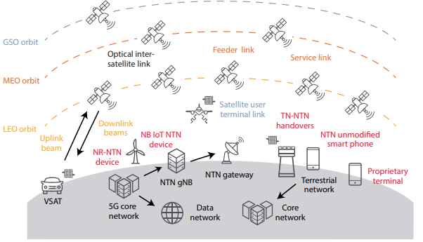
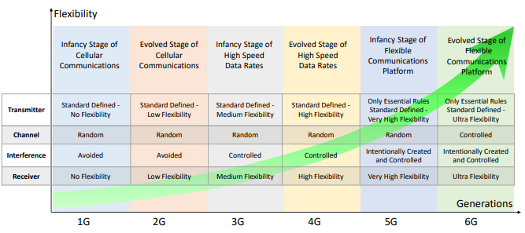

Non-terrestrial Network (NTN)
The introduction of non-terrestrial networks (NTNs) in 3GPP standards will revolutionize wireless communications by integrating terrestrial cellular networks with satellite communications. Mobile network operators (MNOs) want to expand their fifth-generation (5G) and eventually sixth-generation (6G) cellular networks and infrastructure while delivering more bandwidth. Government and military agencies want advancements like enhanced imaging and improved security from the new generation of satellite technologies.
An NTN is a network that includes nodes not physically located on Earth. Although we think primarily of satellites in NTNs, other components can consist of low-altitude platforms / drones (LAP), high-altitude pseudo satellites / drones / balloons (HAPS), satellites across the various orbits, and combinations of these.
The Figure above illustrates NTN space-borne and aerial communication networks operating across the geostationary or geosynchronous equatorial orbit (GEO), medium Earth orbit (MEO), and low Earth orbit (LEO)
Tipos de NTN incluyen:
- Geostationary Equatorial Orbit GEO
- Low Earth Orbit LEO
- Medium Earth Orbit (MEO)
Geostationary or geosynchronous equatorial orbit (GEO) satellites are a cornerstone of non-terrestrial networks (NTN), especially in the context of global communications. Positioned approximately 35,786 kilometers above the Earth's equator, GEO satellites orbit at the same rotational speed as the Earth, effectively remaining in a fixed position relative to the ground. This unique characteristic makes GEO satellites ideal for applications requiring stable, continuous coverage over large geographic areas, such as broadcasting, weather monitoring, and certain military operations. One of the primary advantages of GEO satellites is their ability to provide long-duration, fixed connections. Because they maintain a constant position in the sky, large parabolic antennas on the ground can be pointed directly at a single satellite, creating robust data channels with minimal need for reorientation. This stability is particularly beneficial for applications that demand reliable, high-throughput communication links, such as satellite television and long-distance telephony. However, the high altitude of GEO satellites introduces significant challenges, most notably in terms of latency. The considerable distance between the satellite and the Earth's surface leads to a delay in signal transmission, which can be exacerbated by the number of hops a signal must make between satellites and ground stations. For instance, in a scenario where a signal travels from a remote location to a news studio via a GEO satellite, the round-trip latency can be easily noticeable to viewers as correspondents experience delays in their exchanges.
Low Earth Orbit (LEO) satellites represent a critical innovation in non-terrestrial networks (NTN), particularly for applications that demand low-latency and resilient communication links. Orbiting at altitudes between 500 and 2,000 kilometers above the Earth, LEO satellites operate at speeds of approximately 17,000 miles per hour. This high velocity, coupled with their proximity to the Earth's surface, allows LEO satellites to deliver significantly lower latency compared to their geostationary (GEO) counterparts. This makes them particularly well-suited for real-time applications such as broadband internet, IoT connectivity, and certain defense and intelligence operations. One of the primary advantages of LEO satellites is their ability to reduce latency in communications due to the shorter distance signals must travel between the satellite and ground stations. This proximity enables quicker data transmission, which is crucial for applications where even minimal delays can impact performance, such as in remote sensing, video conferencing, and autonomous vehicle coordination.
Medium Earth Orbit (MEO) satellites occupy a unique position within non-terrestrial networks (NTN), offering a balance between the low-latency benefits of Low Earth Orbit (LEO) satellites and the expansive coverage of Geostationary (GEO) satellites. Positioned at altitudes ranging from approximately 2,000 to 35,786 kilometers above Earth, MEO satellites are strategically utilized for applications that require a compromise between latency, coverage, and network resilience. One of the key advantages of MEO satellites is their ability to cover larger areas than LEO satellites while still maintaining relatively low latency compared to GEO satellites. This makes MEO orbits particularly effective for global navigation systems like GPS, Galileo, and GLONASS, where accurate positioning and timing are crucial. The moderate altitude allows these satellites to provide broad coverage with fewer satellites than would be required in a LEO constellation, while still offering better latency performance than GEO satellites.
6G
The race for 6G supremacy is on, with the US, Europe, and China each pursuing their own strategies and making significant strides in this next-generation wireless technology. The Sixth Generation (6G) of wireless communications represents the next evolutionary step following the widespread standardization of 5G networks. 6G aims to achieve unprecedented levels of flexibility to accommodate emerging applications and diverse requirements that surpass the capabilities of current systems. This enhanced flexibility will be realized through improved awareness utilizing advanced sensing mechanisms and Artificial Intelligence (AI), a richer set of technological options, and optimized adaptation strategies based on practical sensing capabilities. Building upon the foundations laid by previous generations, particularly the multidimensional resource utilization of 4G and the initial flexibility strides of 5G, 6G will necessitate a comprehensive redesign of cellular communications infrastructure. The ultimate goal is to develop an ultra-flexible framework that seamlessly integrates various key enabling technologies and concepts, thereby meeting the complex and dynamic demands of future wireless communication landscapes.
American
The US aims to create secure, resilient, and cost-efficient 6G networks that enhance multi-sensory experiences and leverage AI for improved performance.
European
Europe's objectives include developing essential technological components for 6G, establishing a nationwide test network, and understanding vertical applications in various sectors.
Chinese
China seeks to lead globally in 6G technology through significant investments, achieving record transmission speeds, and leveraging its extensive 5G infrastructure.